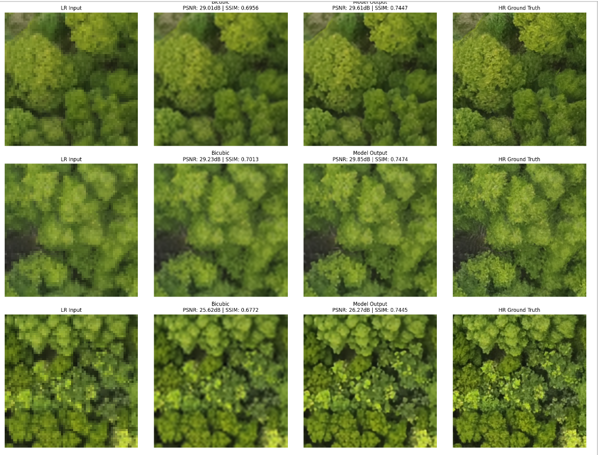

- Large-Scale Data Pipeline: Built the end-to-end data ingestion, normalization, and tile-pairing pipeline in Python/PyTorch, aligning low-resolution multispectral satellite captures with high-resolution aerial UAV orthomosaics into thousands of paired patches.
- Spatial Leakage Prevention: Designed geographic cross-validation splits across distinct geographical regions rather than random sampling, preventing spatial autocorrelation and data leakage across adjacent tiles.
- Model Benchmarking & Exploration: Implemented and compared super-resolution backbones across CNN-based residual networks, GAN-based perceptual loss models, and modern Vision Transformer architectures under standardized evaluation metrics.
RA · PhD Research Project
Active (Current) · 2026
Satellite Image Super-Resolution & Spatial Upscaling

Project Overview & Motivation
Serving as a Research Assistant contributing the deep learning engineering component of a PhD research project on spatial super-resolution and spatial upscaling for multi-band satellite imagery, training restoration backbones against high-resolution UAV aerial orthomosaics as ground truth. Specific dataset coordinates, model weights, and benchmark leaderboards remain unpublished, under NDA.
System Architecture & Methodology
Project Status & Disclosure
Active PhD research collaboration. Quantitative evaluation metrics, architectural modifications, and proprietary datasets remain unpublished, under NDA pending academic publication.
Technical Specifications & Stack
- Role: Research Assistant (Deep Learning)
- Status: Active · Unpublished, under NDA
- Frameworks & Tools: PyTorch, CUDA, NumPy, OpenCV, Geospatial Raster Processing
- Domains: Remote Sensing, Computer Vision, Multi-Band Super-Resolution